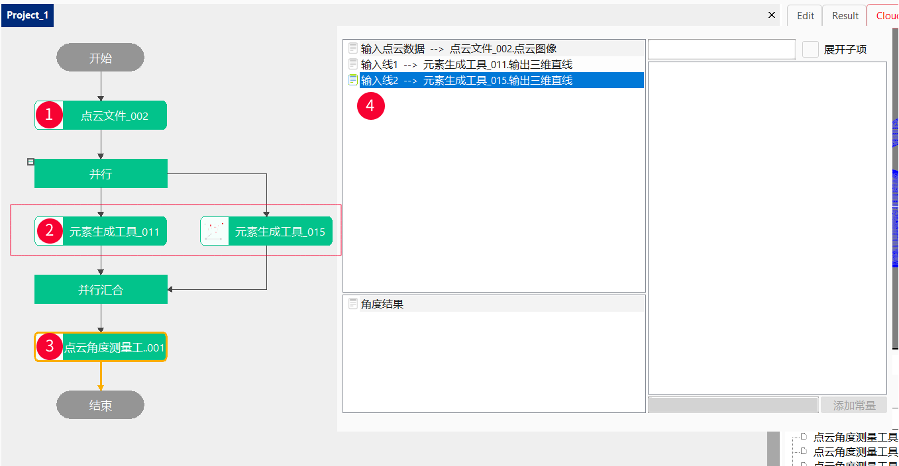
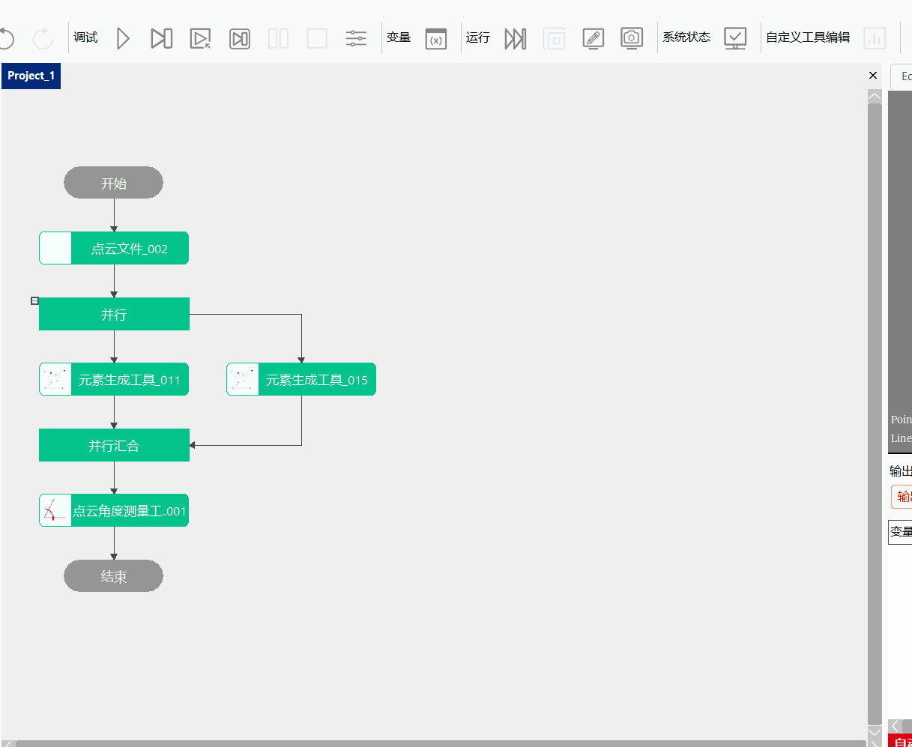
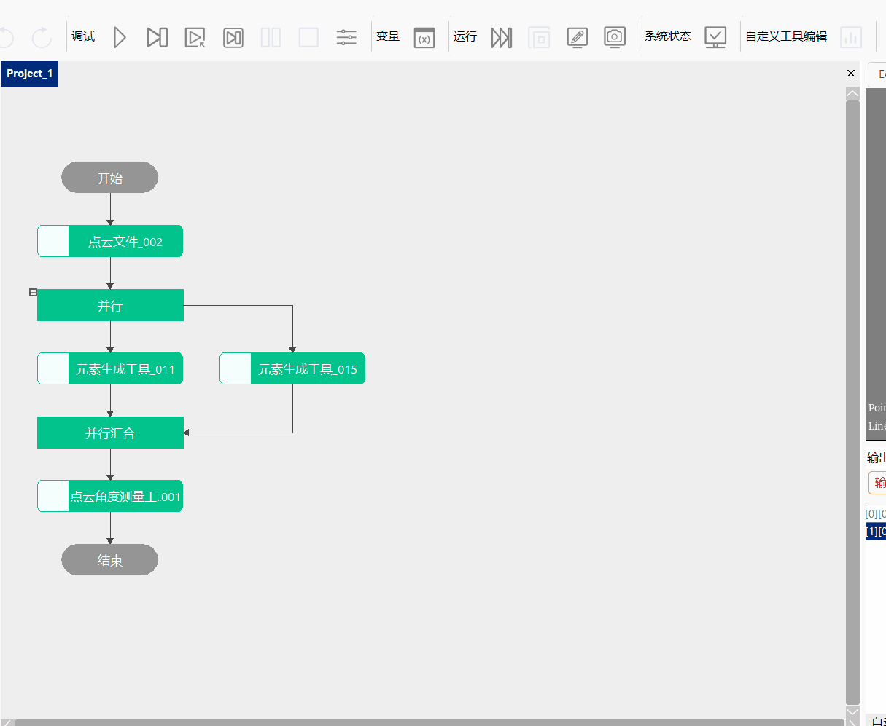
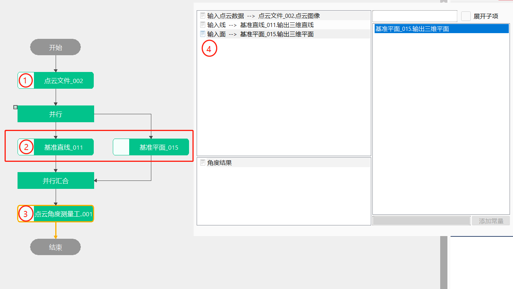
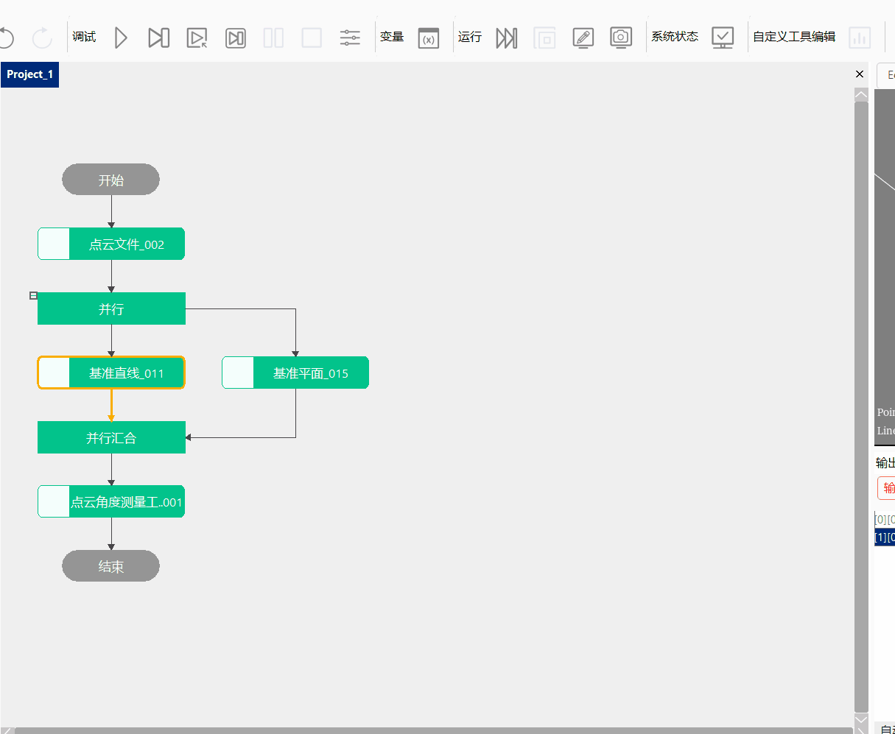
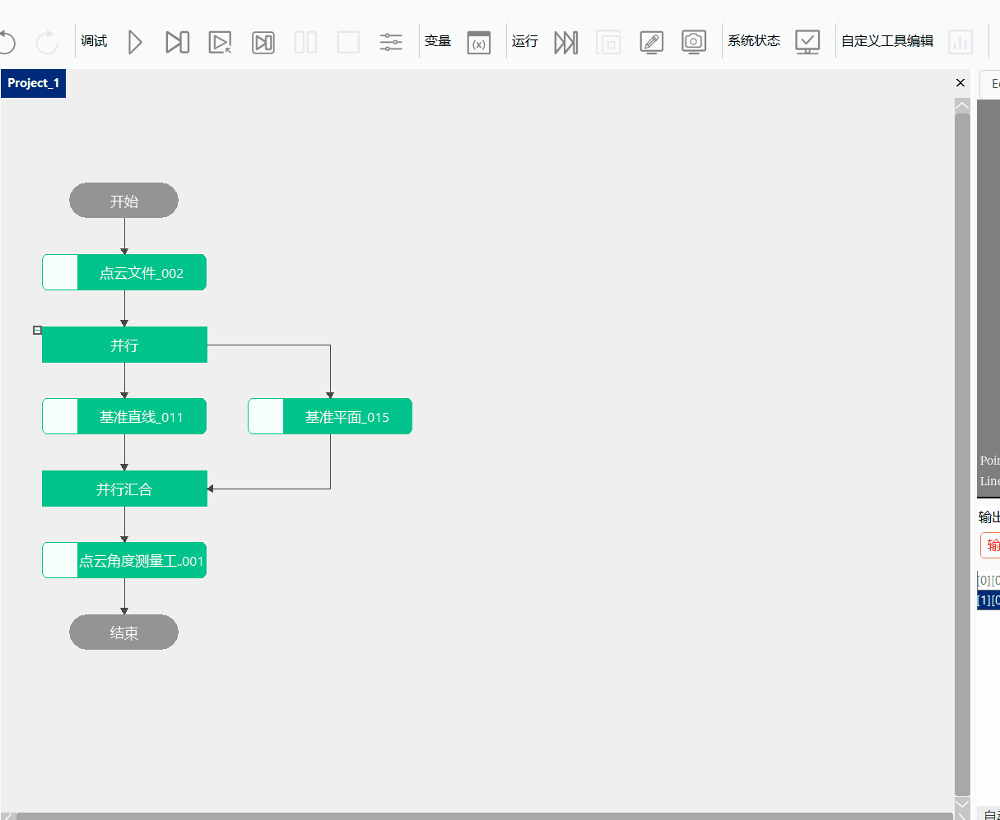
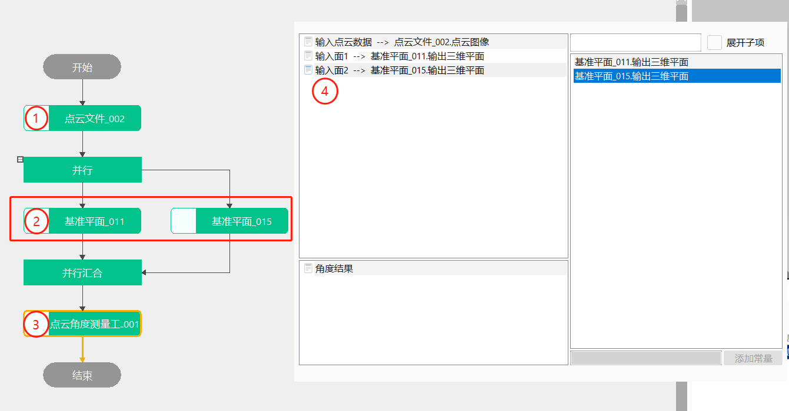
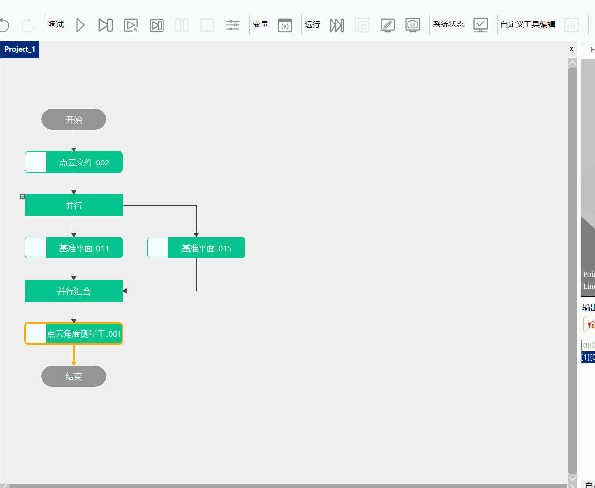
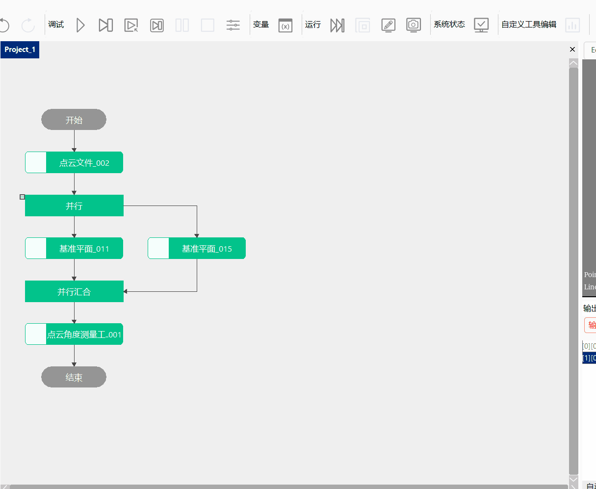

Công cụ này chủ yếu thực hiện tính toán góc giữa đường thẳng với đường thẳng, góc giữa đường thẳng với mặt phẳng, góc giữa mặt phẳng với mặt phẳng
1.Tính toán góc giữa hai đường thẳng ba chiều; 2.Tính toán góc giữa đường thẳng ba chiều và mặt phẳng ba chiều; 3.Tính toán góc giữa hai mặt phẳng ba chiều;
step1：Thêm file đám mây điểm, công cụ tạo phần tử, công cụ đo góc đám mây điểm, sau đó nhấp đúp để mở chuỗi tham số công cụ, liên kết dữ liệu đám mây điểm và đường đầu vào 1, đường đầu vào 2, như thể hiện trong Hình 3-1;
step2：Nhấp chuột phải vào công cụ tạo phần tử và chọn “Thuộc tính” để mở giao diện nâng cao của công cụ, như thể hiện trong Hình 3-2, lần lượt tạo hai đường thẳng;
Step3：Nhấp chuột phải vào công cụ đo góc đám mây điểm và chọn “Thuộc tính” để mở giao diện nâng cao của công cụ, thiết lập hệ số bù là ’1‘, thiết lập bù cố định là ’0‘, sau đó nhấp chạy để nhận được góc của hai đường thẳng này, như thể hiện trong Hình 3-3;



step1：Thêm file đám mây điểm, công cụ tạo phần tử, công cụ đo góc đám mây điểm, sau đó nhấp đúp để mở chuỗi tham số công cụ, liên kết dữ liệu đám mây điểm, đường đầu vào và mặt phẳng đầu vào, như thể hiện trong Hình 3-4;
step2：Nhấp chuột phải vào công cụ tạo phần tử và chọn “Thuộc tính” để mở giao diện nâng cao của công cụ, như thể hiện trong Hình 3-5, lần lượt tạo một đường thẳng và một mặt phẳng;
Step3：Nhấp chuột phải vào công cụ đo góc đám mây điểm và chọn “Thuộc tính” để mở giao diện nâng cao của công cụ, thiết lập hệ số bù là ’1‘, thiết lập bù cố định là ’0‘, sau đó nhấp chạy để nhận được góc của đường thẳng này và một mặt phẳng, như thể hiện trong Hình 3-6;



step1：Thêm file đám mây điểm, công cụ tạo phần tử, công cụ đo góc đám mây điểm, sau đó nhấp đúp để mở chuỗi tham số công cụ, liên kết dữ liệu đám mây điểm và mặt phẳng đầu vào 1, mặt phẳng đầu vào 2, như thể hiện trong Hình 3-7;
step2：Nhấp chuột phải vào công cụ tạo phần tử và chọn “Thuộc tính” để mở giao diện nâng cao của công cụ, như thể hiện trong Hình 3-8, lần lượt tạo hai mặt phẳng;
Step3：Nhấp chuột phải vào công cụ đo góc đám mây điểm và chọn “Thuộc tính” để mở giao diện nâng cao của công cụ, thiết lập hệ số bù là ’1‘, thiết lập bù cố định là ’0‘, sau đó nhấp chạy để nhận được góc của hai mặt phẳng này, như thể hiện trong Hình 3-9;



| Tên tham số | Mô tả tham số |
|---|---|
| Dữ liệu đám mây điểm đầu vào | Liên kết ảnh đám mây điểm bên ngoài |
| Đường đầu vào 1 | Liên kết đường thẳng bên ngoài |
| Đường đầu vào 2 | Liên kết đường thẳng bên ngoài |
| Tên tham số | Mô tả tham số |
|---|---|
| Loại đo góc | Bao gồm: góc giữa hai đường thẳng, góc giữa đường thẳng và mặt phẳng, góc giữa hai mặt phẳng |
| Hệ số bù | Bù hệ số cho kết quả đo. Thông thường là 1, dùng để bù sai số hệ thống như tạo ảnh |
| Bù cố định | Bù cố định cho kết quả đo. Thông thường là 0, dùng để bù sai số hệ thống như tạo ảnh |
| Giới hạn dưới góc | Phạm vi giá trị là [-360,360], và giới hạn dưới phải nhỏ hơn hoặc bằng giới hạn trên |
| Giới hạn trên góc | Phạm vi giá trị là [-360,360], và giới hạn dưới phải nhỏ hơn hoặc bằng giới hạn trên |
Tham số giao diện nâng cao nhất quán với tham số cửa sổ thuộc tính.
| Tên tham số | Mô tả tham số |
|---|---|
| Kết quả góc | Kết quả đo góc |
| Tên tham số | Mô tả tham số |
|---|---|
| Kết quả góc | Kết quả đo góc |
| Thời gian thực thi | Thời gian thực thi của công cụ |
| Kết quả thực thi | Kết quả thực thi của công cụ |
Tham khảo “\Samples\3D\点云\点云测量.gvp”.
Góc giữa hai đường thẳng：Nhập dữ liệu đám mây điểm, lấy hai đường thẳng, tính góc giữa hai đường thẳng;
Góc giữa đường thẳng và mặt phẳng：Nhập dữ liệu đám mây điểm, lấy một đường thẳng và một mặt phẳng, tính góc giữa đường thẳng và mặt phẳng;
Góc giữa hai mặt phẳng：Nhập dữ liệu đám mây điểm, lấy hai mặt phẳng, tính góc giữa hai mặt phẳng;